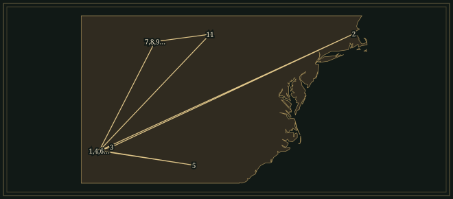
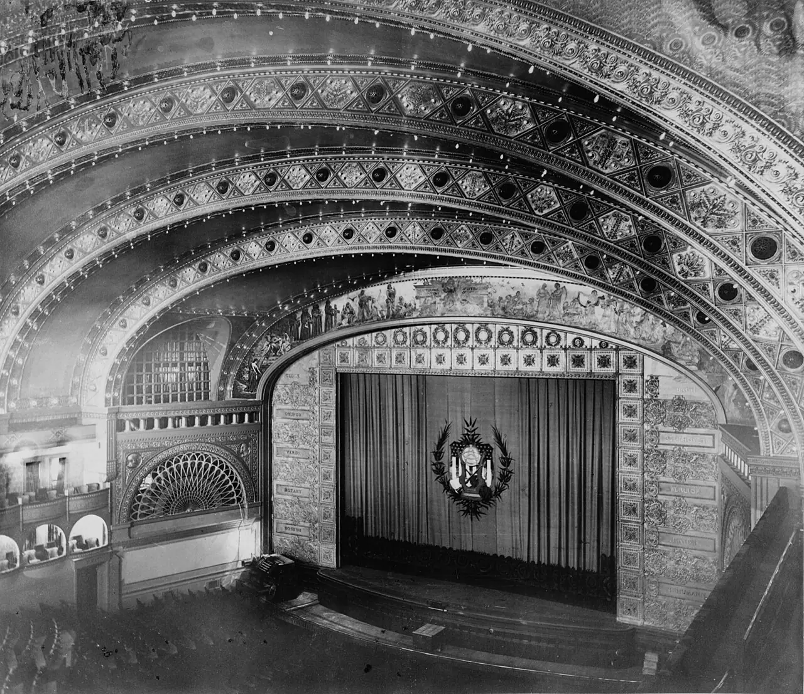

Florence BeatricePrice
American composer whose symphonic music used the juba dance and the brass hymn as central elements.
- Trained
- New England Conservatory, 1903–06; diplomas in organ performance and piano teaching
- Worked
- Teacher in Arkansas and Atlanta; pianist, organist and composer in Chicago from 1927
- Breakthrough
- Wanamaker prizes, 1932 · Chicago Symphony première, 1933
- Output
- Symphonies, concertos, chamber music, piano and organ pieces, songs and spiritual arrangements
“I should like to be judged on merit alone.”
Life
On 15 June 1933 Florence Price came onto the stage of Chicago’s Auditorium Theatre in a long white gown. Frederick Stock and the Chicago Symphony Orchestra had just played her Symphony No. 1 in E minor, and the applause kept bringing her back. It was the first time a major American orchestra had performed a symphony by a Black woman. Maude Roberts George, president of the Chicago Music Association and a critic for the Chicago Defender, had raised money to underwrite the concert. The performance was part of the city’s Century of Progress celebrations. Price was forty-six.
1887–1906Two diplomas in Boston
She was born Florence Beatrice Smith in Little Rock on 9 April 1887. Her father, James, was a dentist; her mother taught her the piano. She had her first musical education at home, and she was publishing pieces while still at school. In 1903 she went to the New England Conservatory in Boston. At its 1906 commencement concert she played the first movement of Henry Dunham’s Organ Sonata in G minor. The programme names her Florence Beatrice Smith.
Price returned south with those two diplomas and held a succession of teaching posts: at Cotton Plant Academy in Arkansas, at Shorter College in North Little Rock, and then as head of music at Clark University in Atlanta from 1910 to 1912. In September 1912 she married the lawyer Thomas Jewell Price and settled again in Little Rock. She taught piano in her own studio and wrote short pieces for the instrument. Her qualifications brought her pupils, but the Arkansas State Music Teachers Association refused her membership because she was Black.
1927–32A working musician in Chicago
Increasing racial violence helped drive the family to Chicago in 1927. Their new home was near Thirty-eighth Street and Calumet Avenue, in the South Side neighbourhood later known as Bronzeville. Price continued studying at Chicago Musical College and the American Conservatory. In 1928 Schirmer accepted At the Cotton Gin for publication. In the same years her marriage was breaking down. Thomas became abusive; the divorce was granted in January 1931, and she had two daughters to support. She played piano and organ in churches and accompanied silent films in theatres along South State Street.
Estella Bonds, a pianist with a house open to musicians, invited Price and her daughters to stay. Estella’s daughter Margaret became Price’s pupil, friend and interpreter. The first Fantasie nègre, written in 1929 and dedicated to Margaret, is a virtuoso piano work on the spiritual Sinner, Please Don’t Let This Harvest Pass. A grand introduction leads to the tune, which is followed by increasingly elaborate transformations. In 1932 teacher and pupil both won prizes in the Wanamaker competition. Price’s E minor Symphony and Piano Sonata won their categories; Bonds won for a song.
1931–34A hymn inside a symphony
A broken foot gave Price uninterrupted time for composing while she worked on the symphony in 1931. Its first movement begins with a syncopated phrase for bassoon. Dvořák’s New World Symphony is an audible model, especially in the melodies modelled on spirituals. Price’s two principal themes are her own. She set them in the long span of sonata form, in which a short phrase is passed between instruments and developed at length.
The slow movement begins with a hymn for a ten-part brass choir, accompanied by drums and cathedral chimes. Then comes the Juba Dance, and finally a Presto built on rising and falling scale figures. The 1933 première presented all four movements to the Chicago public. A year later, on 24 June 1934, Price was the soloist in the première of her Piano Concerto in One Movement at Orchestra Hall, with the Chicago Musical College Orchestra.
1935–41Marian Anderson’s voice
In 1935 Price returned to Little Rock for a concert of her own music at Dunbar High School. Marian Anderson, who sang her songs and spiritual arrangements, brought her music to further audiences. On Easter Sunday, 9 April 1939, Anderson sang before six microphones at the Lincoln Memorial in Washington, after the Daughters of the American Revolution had refused her the use of Constitution Hall because she was Black. Some 75,000 people gathered outside to hear her, with Kosti Vehanen at the piano. The last item in the printed programme was Price’s arrangement of My Soul’s Been Anchored in de Lord.
Anderson also regularly performed Songs to the Dark Virgin, Price’s setting of Langston Hughes. A surviving manuscript is dated 1935; Schirmer published the song in 1941. Hughes’s images move from jewels to a silken garment to a leaping flame. Price’s piano arpeggios rise from the bass; in the middle stanza they surround the voice, and in the final stanza the vocal line reaches its highest point. The poem does not name the beloved it addresses.
1940–53“Merit alone”
The Third Symphony was first performed at the Detroit Institute of Arts on 6 November 1940, conducted by Valter Poole. It had been commissioned through the Federal Music Project. It has a brass introduction, whole-tone harmonies and another Juba, and extends the means used in the First. A successful première did not guarantee that another conductor would take up a score. On 5 July 1943 Price wrote to Serge Koussevitzky: “To begin with I have two handicaps — those of sex and race.” She went on: “I should like to be judged on merit alone.” Koussevitzky never conducted her music.
Price went on writing for the instruments and performers she worked with. Adoration was published in an organ magazine in 1951, and the Second Violin Concerto followed in 1952. The three piano pieces of Dances in the Canebrakes date from 1953: Nimble Feet, Tropical Noon and Silk Hat and Walking Cane. She died in Chicago on 3 June that year. Her music included large orchestral scores, songs, chamber pieces and smaller keyboard works suitable for teaching.
2009The house in St. Anne
In 2009 Vicki and Darrell Gatwood were preparing to renovate an abandoned house in St. Anne, Illinois. It had been Price’s summer home. A fallen tree had damaged the roof, but in a dry part of the building they found manuscripts, books and papers bearing her name. They contacted the University of Arkansas, which already held Price materials. The find restored works that had been thought lost, including the violin concertos and Fourth Symphony. The Second Violin Concerto, one of the recovered works, opens with D major and F minor sounding against each other.
Where to hear it
- Symphony No. 1 in E minor1931–32The Philadelphia Orchestra; Yannick Nézet-Séguin, conductor · Deutsche Grammophon · Released 2021
The E-minor symphony that Frederick Stock introduced with the Chicago Symphony in 1933, paired on this album with the Third. A broad introduction to Price’s orchestral writing; the linked video contains the complete first movement.
- My Soul’s Been Anchored in the Lord1931; published 1937Marian Anderson, contralto, with piano accompaniment · Sony Classical / RCA Victor · Historical RCA Victor recordings; reissued 2021
Price’s spiritual arrangement sung by Anderson, one of her most important advocates. Disc 1 of Beyond the Music contains two recordings of the song, alongside Anderson’s European recital repertoire.
- Piano Quintet in A minorc. 1935 (tentative dating)Kaleidoscope Chamber Collective: Elena Urioste and Melissa White, violins; Rosalind Ventris, viola; Laura van der Heijden, cello; Tom Poster, piano · Chandos · 17–19 September 2020, Potton Hall, Suffolk
The third movement is a Juba; the fourth is a quick Scherzo. The quintet is scored for piano and four strings. The complete quintet occupies tracks 5–8 of American Quintets.
These recordings are under copyright, so the Hall cannot play them; the links go to the labels’ and artists’ own uploads and to streaming services.
Places

All 12 places, with sources
- Little Rock · 1887-04-09 · born
She was born Florence Beatrice Smith, and her mother gave her her first music lessons.
- Boston · 1903–1906 · studied
Studied at the New England Conservatory, receiving an organ soloist’s diploma and a piano teacher’s diploma in 1906.
Dan Dykema, Florence Price — Encyclopedia of Arkansas · NEC Archives: A Celebration of NEC’s African American Legacy
- Cotton Plant · 1906–1907 · worked
Taught music at Cotton Plant Academy after returning from Boston.
Dan Dykema, Florence Price — Encyclopedia of Arkansas · GeoNames: Cotton Plant
- North Little Rock · 1907–1910 · worked
Taught music at Shorter College.
Rae Linda Brown: Symphony No. 1 in E minor — biographical chronology · Mapcarta: North Little Rock, OpenStreetMap place record
- Atlanta · 1910–1912 · worked
Headed the music department at Clark University.
- Little Rock · 1912–1927 · lived
Returned to marry Thomas Jewell Price in September 1912; taught piano in her own studio before the family moved to Chicago in 1927.
- Chicago · 1927–1953-06-03 · lived
Settled on the South Side and worked as a teacher, pianist, organist and composer; Estella and Margaret Bonds were close friends and collaborators.
Arionne Nettles: Florence Price and Black Chicago — WBEZ · Dan Dykema, Florence Price — death date
- Chicago · 1933-06-15 · premiere
Frederick Stock conducted the Chicago Symphony Orchestra in the première at the Auditorium Theatre, during the Century of Progress celebrations. Symphony No. 1 in E minor.
Phillip Huscher: Florence Price’s Symphony No. 1 — Chicago Symphony Orchestra
- Chicago · 1934-06-24 · premiere
Price played the solo part with the Chicago Musical College Orchestra at Orchestra Hall; the works catalogue does not identify the conductor. Piano Concerto in One Movement.
Florence B. Price Works Catalog: Piano Concerto in One Movement
- Little Rock · 1935 · travelled
Returned for a concert of her own compositions at Dunbar High School, sponsored by the Philander Smith College Alumni Association.
- Detroit · 1940-11-06 · premiere
Valter Poole conducted the Detroit Civic Orchestra at the Detroit Institute of Arts in the première of the Federal Music Project commission. Symphony No. 3 in C minor.
G. Schirmer / Wise Music Classical: Symphony No. 3 in C minor
- Chicago · 1953-06-03 · died
Died in Chicago after more than a quarter-century based in the city.
Influences
Teachers, encounters and borrowed music, each with its account and sources in the Web of Influence.
Influences received
Influences passed on
The Sound
♮Melody
Price wrote melodies in the manner of spirituals without borrowing existing songs. The two principal themes of the First Symphony are newly composed, though their shapes recall spirituals. In the first Fantasie nègre she used an existing song, Sinner, Please Don’t Let This Harvest Pass, and the tune stays recognisable through its virtuoso transformations.
𝄾Dance
In the First and Third Symphonies, a Juba, an African American dance, takes the place of the European scherzo, and its syncopation drives the movement. The steps of the dance keep regular time while the tune puts its accents between them.
𝄞Brass and percussion
The Largo of the First Symphony gives its hymn to a ten-part brass choir. Drums and cathedral chimes join the accompaniment, and the hymn returns in changing surroundings.
𝄢Piano
In Fantasie nègre No. 1 a spiritual is the basis of a concert fantasy. A grand opening leads to a plain statement of the tune, followed by increasingly demanding figuration. In the Piano Sonata, themes return across the three movements and link them; the closing Scherzo combines African American dance rhythms with virtuoso piano writing.
♯Harmony
Price’s late harmony departs from the familiar concerto idiom. The Second Violin Concerto begins with D major and F minor chords, which have no notes in common. The Third Symphony contains whole-tone passages alongside its major and minor writing.
𝄡Words
In Songs to the Dark Virgin the piano follows the images of the poem. Rising arpeggios accompany Hughes’s jewels, the piano part surrounds the voice where the poem imagines a garment, and the vocal line reaches its highest point at the final image of flame. Anderson’s repertory included this art song as well as Price’s spiritual arrangements.
Works
A selection from the composer’s works.
- 1927; published 1928At the Cotton GinPianoOne of the short piano works with which Price established a publishing career. Schirmer accepted it soon after her move to Chicago.
- 1929–32Fantasies nègres Nos. 1–4PianoFour substantial fantasies. The first, in E minor, is based on Sinner, Please Don’t Let This Harvest Pass and is dedicated to Margaret Bonds; three further fantasies followed in 1932.
- 1931; published 1937My Soul’s Been Anchored in de LordVoice and piano; arrangement of a spiritualThe arrangement Anderson sang at the Lincoln Memorial on 9 April 1939, at the end of the printed programme before her encore.
- 1931–32Symphony No. 1 in E minorOrchestraA bassoon opens the work; a brass hymn, a Juba and a fast finale follow. It won the 1932 Wanamaker orchestral prize, and Stock introduced it in Chicago in 1933.
- 1932Piano Sonata in E minorPianoThree movements with themes that return across their boundaries. The last is a Scherzo; the sonata won the piano category of the 1932 Wanamaker competition.
- 1933–34Piano Concerto in One MovementPiano and orchestraPrice played the solo part at the 1934 première in Orchestra Hall. Her original orchestration is available alongside Trevor Weston’s later re-orchestration, and recordings should state which version they use.
- 1934Mississippi River SuiteOrchestraA continuous orchestral work incorporating spirituals including Go Down, Moses, Nobody Knows the Trouble I’ve Seen and Deep River.
- By 1935; published 1941Songs to the Dark VirginVoice and piano; poem by Langston HughesA song Marian Anderson regularly performed. The piano part follows the poem’s images of jewels and an enclosing garment before the voice rises to its image of flame.
- 1938–40Symphony No. 3 in C minorOrchestraCommissioned through the Federal Music Project and first performed in Detroit under Valter Poole. Its brass writing, whole-tone harmony and a Juba go beyond the scope of the First.
- Published 1951AdorationOrganPublished in the December 1951 issue of The Organ Portfolio. The original is a piece for organ; the many instrumental arrangements came later.
- 1952Violin Concerto No. 2Violin and orchestraA compact late concerto recovered among the St. Anne manuscripts. Its opening sets D major against F minor, and the solo violin enters while the harmony is still unsettled.
- 1953Dances in the CanebrakesPianoThree late dances: Nimble Feet, Tropical Noon and Silk Hat and Walking Cane. The piano originals belong beside the concert fantasies and sonata.
In the Score
Short examples, engraved and playable.
Melody — schematicFive notes
Dance — schematicMelody and beat
Late harmony — schematicD major and F minor
Sister Arts


The hall in which Stock and the Chicago Symphony gave the first performance of Price’s First Symphony on 15 June 1933, photographed decades earlier. The photograph shows the broad stage and stacked balconies.

Anderson and her pianist Kosti Vehanen face the crowd at the concert whose printed programme ended with Price’s My Soul’s Been Anchored in de Lord. The six microphones described in the Library of Congress account served both the audience outside and the radio broadcast.

The newspaper’s composing room, eight years after Price’s première. Defender critic Maude Roberts George had helped fund the concert, and the paper’s coverage treated the event as a collective achievement. Lee’s photograph shows men at work setting the paper’s type.
Recommended recordings
- Symphonies Nos. 1 and 3Philadelphia Orchestra; Yannick Nézet-SéguinDeutsche Grammophon · 2021A good first recording of her orchestral music. It couples both symphonies, so the changes between the 1933 breakthrough and the Detroit work can be heard side by side.
- Fantasie Nègre: The Piano Music of Florence PriceSamantha EgeLorelt, LNT144 · 2021The essential piano choice. All four fantasies share the programme with smaller sketches, and Ege keeps the spiritual’s melody clear through the first fantasy’s elaborate writing. The programme includes the recovered Third as well as the familiar First.
- Violin Concertos Nos. 1 and 2Er-Gene Kahng; Janáček Philharmonic; Ryan CockerhamAlbany, TROY1706 · 2018This recording is recommended for the late Price, in particular the concise Second Concerto. Kahng plays the solo writing with full command, in music whose manuscripts had nearly disappeared.
- Beyond the Years: Unpublished Songs of Florence PriceKaren Slack; Michelle CannAzica · 2024The next purchase after the symphonies. The recording contains nineteen songs by Price, who is often represented in concert programmes by a single spiritual, and is a full recital for singer and pianist.
Lineage
Dvořák and Samuel Coleridge-Taylor offered models for building concert music from African American sources. Price taught Margaret Bonds; Anderson carried her songs into recital programmes. Ege and Kahng belong here as later scholar-performers who brought manuscript works to the piano and violin repertories.
Further reading
- Rae Linda Brown, The Heart of a Woman: The Life and Music of Florence B. Price, edited and with a foreword by Guthrie P. Ramsey Jr. (University of Illinois Press, 2020).biography
The standard study of how Price’s training, teaching, family responsibilities and Chicago career relate to her major compositions; it draws on archival and interview research and includes musical examples.
- Samantha Ege, South Side Impresarios: How Race Women Transformed Chicago’s Classical Music Scene (University of Illinois Press, 2024).cultural history
On the teachers, patrons, organisers and women’s networks that supported classical music on the South Side around Price, Margaret Bonds and Nora Holt. Useful on the work behind a public première.
- Florence Price, Symphonies Nos. 1 and 3, edited by Rae Linda Brown and Wayne Shirley, Music of the United States of America 19 (A-R Editions, 2008).critical edition
Provides the full orchestral scores and English critical commentary for tracing the brass hymn, Juba movements and editorial decisions. Its 2008 publication also shows that substantial Price scholarship preceded the St. Anne manuscript discovery.
- Michael Lively, ‘Multi-Linear Continuity and “Songs to the Dark Virgin” by Florence Price [1888–1953]’, College Music Symposium 63, no. 1 (2023), doi:10.18177/sym.2023.63.sr.11581.analysis
Examines how piano figures, recurring dissonances and competing harmonic readings interact with Hughes’s poem. The article’s title gives an older birth year; its text gives 1887.
Cite this page
Contrapunctus. “Florence Price.” Accessed 19 October 2026. https://mottopanikeiku.github.io/contrapunctus/composers/price.html.
@misc{contrapunctus-composers-price,
author = {{Contrapunctus}},
title = {Florence Price},
howpublished = {\url{https://mottopanikeiku.github.io/contrapunctus/composers/price.html}},
note = {Accessed 2026-10-19}
}